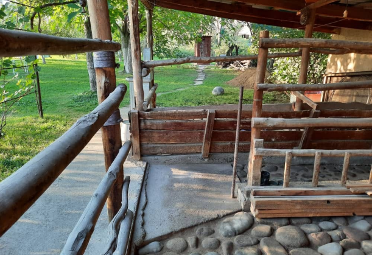

{% extends 'main/base.html' %}
{% block title %}
about
{% endblock %}
{% block content %}

"Нам, режиссерам кино эпохи становления независимого Кыргызстана, чем только ни приходилось заниматься между фильмами, чтобы прокормить семью. Например, Эрнест, Темир таксовали. А я держал скотину. В одно время у нас были даже две коровы: Улитка, которую я купил на постановочные "Где твой дом, Улитка?" и буренка кормилица Маша.
Как-то утром, Айчурек, проснувшись, пошла в туалет и по дороге вдруг обнаружила, что Маши нет на месте. А это девяностые - рост преступности, разгул скотокрадства. Она с криком побежала будить маму. Все всполошились, бросились искать пропавшую корову. Обыскали всю округу. Растроенная, уставшая Айчурек вернулась домой и вспомнила, что собиралась в туалет. И только туда вошла, за собой закрыв дверцу, как послышалось жалостное "му - у - у - у".
- Маша - а - а - а! - вскакивая, закричала Айчурек и выскочила на улицу.
- Му -у - у - у, - ответила Маша на крик хозяйки и тут Айчурек увидела свою корову, по живот утопающую в человеческих нечистях соседского туалета. В свое время, ленивые соседи экскаватором выкопали огроменную яму, установили будку, а оставшуюся часть ямы закрыли шифером, сверху засыпали глиной, которая проросла травой. Ночью, отвязавшаяся Маша пошла щипать траву и провалилась.
Почти всем селом вытаскивали корову. Возле нее невозможно было даже стоять, и мама вызвалась помыть ее. Тогда водопроводные колонки были общие и стояли на улице вдоль дороги. Мама, долго не раздумывая, стала стиральным порошком мыть Машу прямо у колонки. Прохожие удивленно поглядывали на нее, а она, оправдываясь, говорила: "Сынок возвращается из командировки, вы же знаете, он любит чистоту и порядок. Вот и решили помыть корову". Айчурек рассказывала, как потом из-за запаха целую неделю не могли пить молоко.
Сарай, стойло, туалет - все сохранилось и является эмоциональной частью Арт резиденции".
{% endblock %}